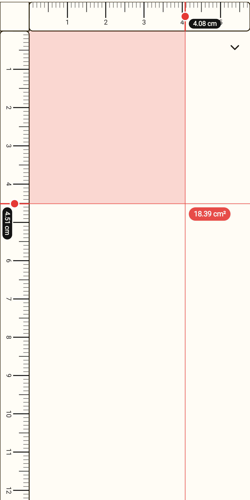
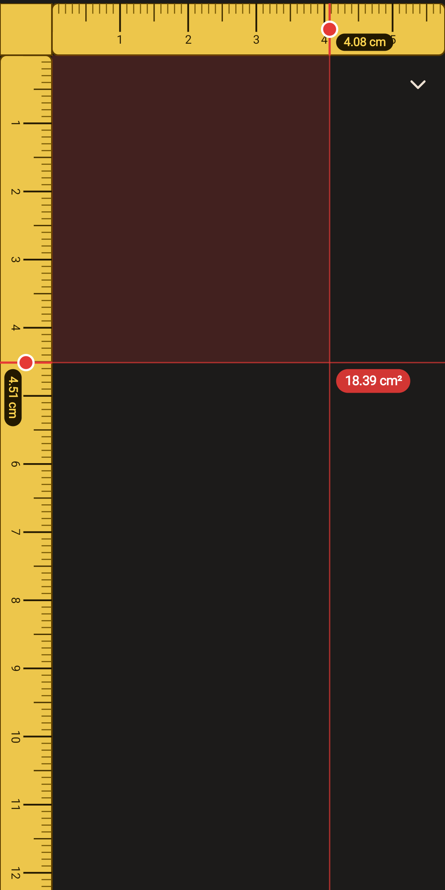
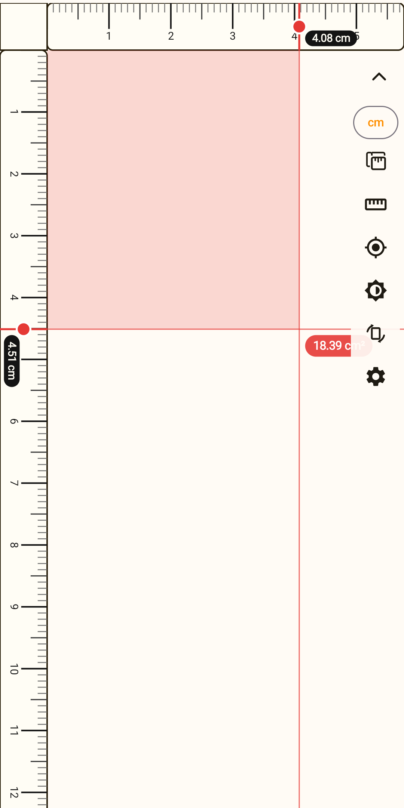
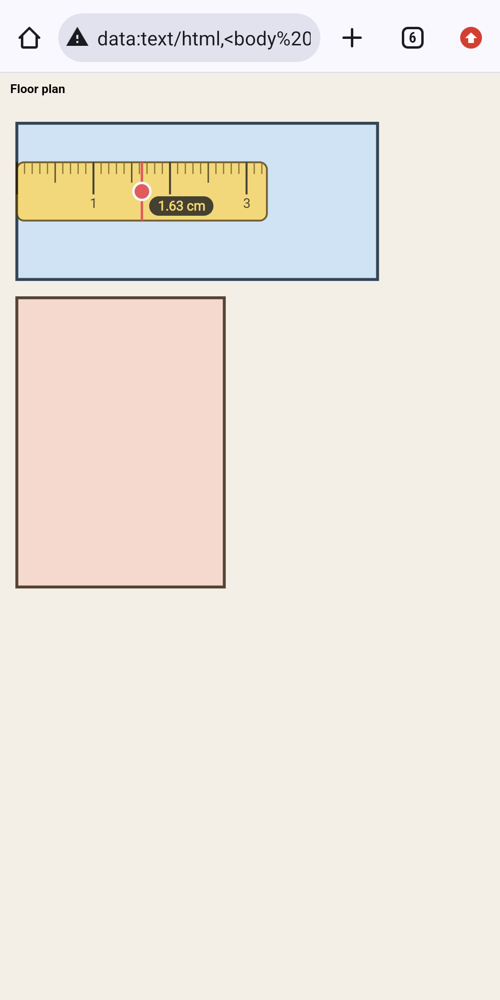
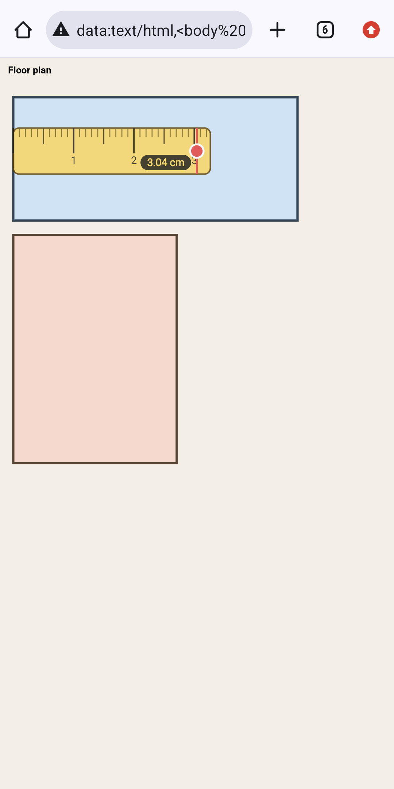
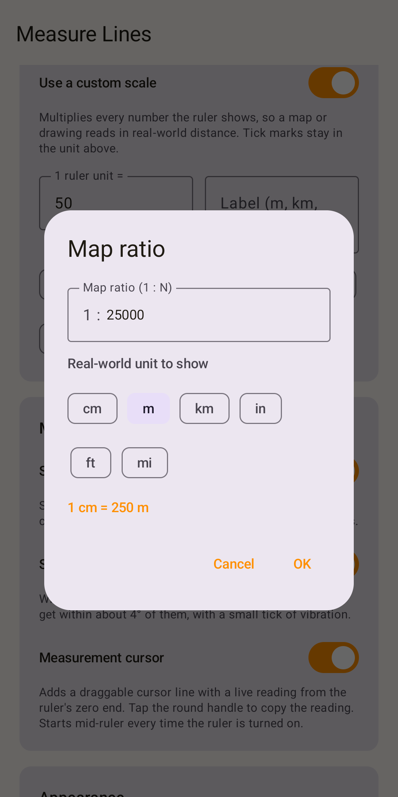
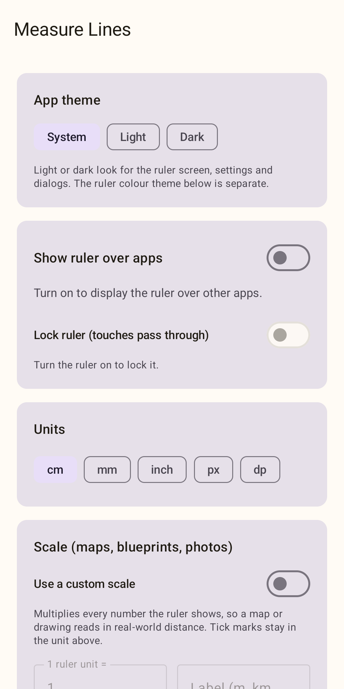
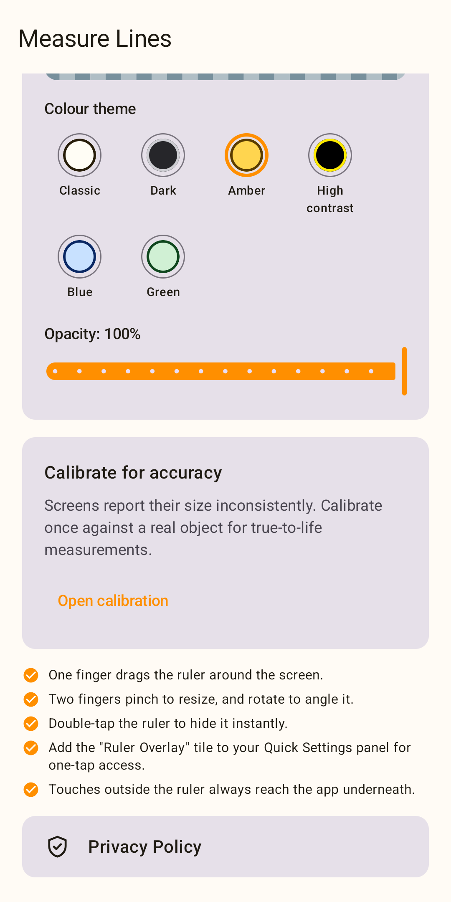

Measure anything on your screen.
A ruler for your phone's display. Use the full-screen rulers, or float a ruler over any other app. No ads, no internet access, nothing collected.
Android 8.0 and newer
Two rulers, ready the moment you open it
The launch screen has a ruler along the top and one down the left edge. Touch either one and a cursor jumps to your finger and shows the reading.
- Both scales start at the corner where they meet
- Tap a cursor to copy its reading

Width, height and area at once
Guide lines from the two cursors cross on the screen, and a pill shows the area of the rectangle they mark out.
- Only the space between the corner and the cursors is shaded, never the rulers
- Tap the area pill to copy it, or drag it to move both cursors

Controls that stay out of the way
One small button under the ruler opens the controls and closes them again, so the screen stays clear for measuring.
- Units, show the ruler over apps, set scale, crosshair
- Light or dark background, rotation lock and Settings

Float a ruler over any app
Drag it, stretch it with two fingers and turn it to any angle. Touches outside the ruler go straight to the app underneath.
- The first finger you put down stays pinned while you stretch or turn
- Double-tap the ruler to hide it
Some apps, such as Android's own Settings, hide overlays on purpose. Needs the “Display over other apps” permission.

Read the number, tap to copy
Turn on the measurement cursor and the overlay ruler shows a live reading from its zero end. Tap the round handle to copy it.
- Shows a 45° snap and the angle while you turn the ruler
- Lock the ruler and every touch passes through it

Measure maps and plans in real distance
Set a scale and every number reads in real-world units. Enter a map ratio such as 1:25000, or put the cursor on a known distance and type its length.
- Metres, kilometres, feet, miles and more
- The ruler shows a small caption while a scale is on

Your units, your look
Pick centimetres, millimetres, inches, pixels or dp. Choose Light, Dark or follow your phone for the app.
- Switch the ruler on and lock it from Settings
- Quick Settings tile to turn the overlay on from anywhere

Six colours, calibrated to your screen
Classic, Dark, Amber, High contrast, Blue or Green, with adjustable opacity for the overlay. Calibrate once against a real ruler or a bank card so centimetres are true.

Private by design
No internet permission
Measure Lines can't open a network connection, so nothing can leave your phone.
No ads, no accounts
No ads, analytics or sign-in. Settings stay in the app's private storage.
Copies only when you tap
A reading goes to the clipboard only when you tap it. The app never reads your clipboard.
What it does not do yet
- No camera or AR measuring: it measures the screen, not the room around you.
- Android only, and one overlay ruler at a time.
- A rotated overlay ruler can catch touches in a small area at its corners that would otherwise reach the app below.
Read the privacy policy.
Still have a question?
If something is unclear or not working for you, I would like to hear about it directly.